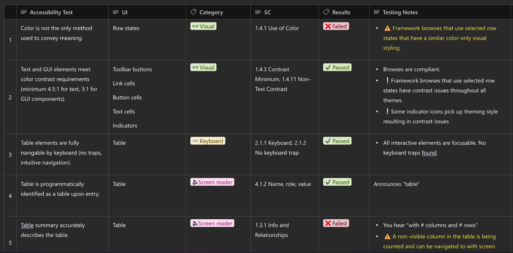
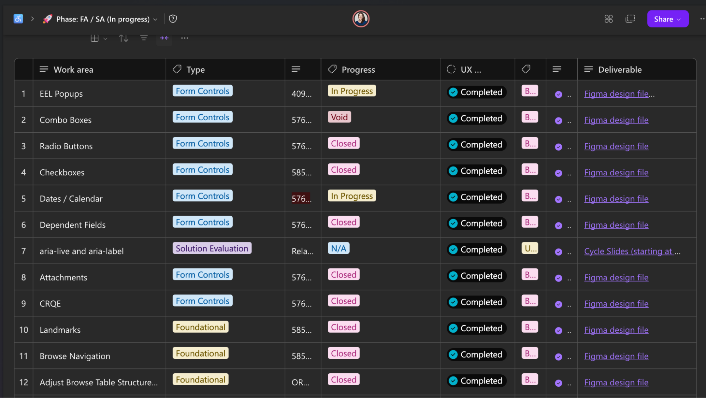
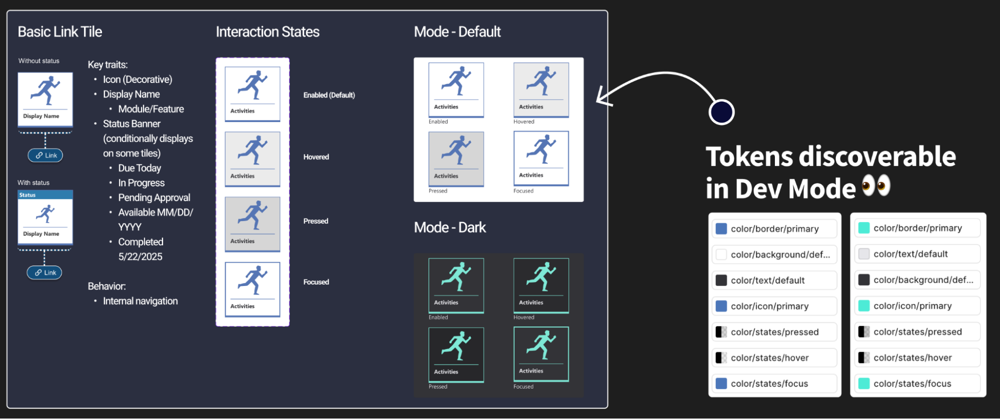
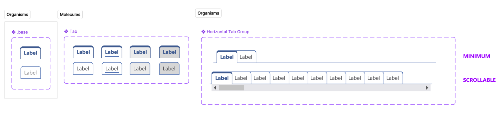
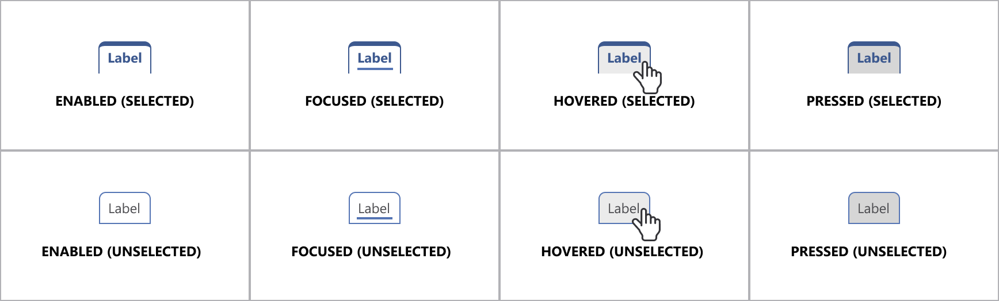

UX Case Study · Enterprise K–12 Platform
Framework-Level Accessibility Remediation
Rebuilding the Foundation: Turning Accessibility Into Infrastructure
30+
Framework-level components remediated with cascading downstream impact
10
High-impact screens improved, prioritized by student and parent usage data
Desktop · Mobile
Consistent accessibility across all platforms and form factors
Inputs · Nav · Tables · Validation
End-to-end component coverage across all core categories
01 — Overview
When the Problem Was Bigger Than the Screens
Recognizing an architectural failure, not a surface problem
The Starting Point
When I joined the frontend framework initiative, accessibility was not functioning as a layer of quality within the product. It was largely absent from the foundation entirely.
The platform supported a large K–12 ecosystem used daily by students, parents, teachers, and administrators across desktop, mobile, and kiosk experiences. But beneath the visual interface, core accessibility fundamentals were inconsistent or missing altogether.
What Was Broken
| Area | Failure |
|---|---|
| Screen Readers | Struggled to interpret navigation — no semantic structure to parse |
| Form Controls | Lacked accessible names — inputs were invisible to assistive technology |
| Interactive Elements | Relied heavily on non-semantic HTML — ARIA absent or incorrect |
| Keyboard Navigation | Users could not consistently move through core workflows |
| Data Tables | Lacked structure and context — screen readers read as flat text |
| Validation Messaging | Error messages visually present but inaccessible to assistive technology |
The Critical Insight
At the time, many accessibility conversations focused on fixing individual screens after issues were discovered. Through testing and analysis, I realized the root issue existed much deeper within the frontend framework itself.
This was not a collection of isolated bugs. It was an architectural problem. Continuing screen-by-screen would trap the organization in an endless remediation cycle.
This project became an opportunity to fundamentally shift how accessibility was implemented across the entire product ecosystem — rebuilding the underlying design and development infrastructure so accessibility could scale systematically.
02 — Empathize
Experiencing the Product Through Assistive Technology
Feeling the failure before diagnosing it
Immersive Testing
Before defining solutions, I immersed myself in the product experience as users with disabilities would encounter it. The goal was not to audit from a distance — it was to feel the friction firsthand.
-
Screen Reader Testing
NVDA and VoiceOver — evaluating semantic interpretation
-
Keyboard-Only Navigation
Tab, shift-tab, arrow keys — no mouse at any point
-
Zoom & Magnification
200–400% zoom — layout, reflow, readability
-
Contrast Analysis
All interactive states — default, hover, focus, error
-
Voice Control Evaluation
Command discoverability across navigation and forms
Simple workflows became exhausting. Navigation lacked structure. Screen readers announced incomplete or misleading information. Keyboard focus disappeared unpredictably. Error messages were visually present but inaccessible to assistive technology.
The deeper I tested, the more apparent it became that accessibility issues were not isolated defects. They were recurring architectural patterns replicated across the system.
To build shared understanding, I facilitated collaborative testing sessions with engineers and designers — asking them to navigate core workflows using only keyboard input and screen reader feedback. The reaction was immediate: accessibility stopped feeling abstract and became operationally urgent.
Accessibility Persona
Jordan
High School Student · Age 16 · Chromebook · Keyboard-only
Goals
- Complete school tasks independently
- Navigate the portal without losing orientation
- Keep pace with peers despite injury
Frustrations
- Focus disappears — must restart from the top
- Dropdowns unreachable by keyboard
- Error messages shown but never announced
Behaviors
- Tabs slowly, listens for focus cues
- Zooms in to identify interactive elements
- Avoids broken areas; asks peers for help
"If I lose focus on the page, I lose track of where I am completely."
Accessibility Audit Snapshot
-
Critical
Dropdown Menus
Keyboard inaccessible — no focus entry point. Users unable to complete selections independently.
-
High
Data Tables
Missing semantic headers — no row/column relationships. Screen reader reads as flat, unstructured text.
-
Critical
Validation Errors
Errors not announced to assistive technology. Users unaware of submission failures or required fields.
-
High
Buttons
Missing accessible names — icon-only with no label. Ambiguous interaction — user cannot predict outcome.

Atomic Accessibility Research Framework
Rather than presenting disconnected violations, I structured findings through a layered progression — transforming accessibility from subjective observations into actionable product decisions grounded in user impact.
| Experiment | Fact | Insight | Recommendation |
|---|---|---|---|
| Screen reader testing on forms | Inputs announced without context — 0 accessible names on key forms | Users cannot confidently complete workflows or understand field purpose | Standardize accessible naming conventions across all form components |
| Keyboard testing on navigation | Focus order inconsistent — users land on unexpected elements | Users lose spatial orientation and cannot predict navigation flow | Rebuild focus management logic at the framework level |
| Zoom testing at 200% | Layout breaks — content clips or reflows off-screen | Content entirely inaccessible for low-vision users | Refactor responsive structure to support 200–400% zoom |
03 — Define
Identifying the Systemic Root Cause
Moving from screen evaluation to framework mapping
From Screens to Systems
Once testing patterns became clear, I shifted from evaluating individual screens to mapping the underlying framework architecture. This shift was not academic — it was necessary. Fixing symptoms without addressing structure would guarantee recurrence.
I identified over 30 reusable components requiring remediation, alongside 10 high-impact public-facing screens prioritized based on usage data from students and parents.
Component Categories
| Category | Scope |
|---|---|
| Inputs & Form Controls | Labels, accessible names, error associations, field groupings |
| Buttons & Interactive Elements | Accessible names, focus states, pressed/hover states |
| Navigation Systems | Landmark structure, focus order, skip links, semantic hierarchy |
| Data Tables | Column/row headers, captions, cell relationships |
| Validation Patterns | Error announcement, live regions, field association |
| Structural Hierarchy | Heading levels, landmark regions, reading order |
| Modal Interactions | Focus trapping, dismiss behavior, return focus |
| Interaction States | Focus, hover, pressed, disabled — all visible and accessible |

Core Framework Issues
| Issue | Description |
|---|---|
| Non-Semantic HTML | Framework generated div-based UI by default — no native roles |
| Missing Accessible Names | Components rendered without labels — invisible to screen readers |
| Inconsistent ARIA Usage | ARIA applied without semantic HTML base — creating false confidence |
| Poorly Structured Tables | Data relationships absent — screen readers could not interpret grid |
| Unpredictable Focus Management | Focus order disconnected from visual layout and user expectation |
The framework itself was generating inaccessible experiences by default. The goal was no longer remediation — it was changing the foundation that produced accessibility outcomes across the entire product.
Component Prioritization Matrix
| Priority | Component | Frequency | User Impact |
|---|---|---|---|
| P1 | Inputs & Form Controls | Very High | Critical |
| P1 | Navigation Systems | Very High | Critical |
| P1 | Data Tables | High | High |
| P2 | Modals | Medium | High |
| P3 | Tooltips | Medium | Medium |
04 — Ideate
Negotiating Between Ideal Accessibility and Technical Reality
Collaborative problem-solving across design and engineering
The Collaboration Challenge
This phase became deeply collaborative. While ideal accessibility solutions often existed theoretically, implementation constraints within the framework required constant negotiation between design intent, engineering feasibility, and product timelines.
I partnered closely with engineers to explore multiple implementation approaches, moving between native HTML replacements, ARIA enhancements, framework-level abstractions, and progressive remediation strategies.
Some engineers initially resisted large-scale framework changes due to the perceived scope and technical debt involved. To build alignment, I focused on demonstrating how systemic fixes would ultimately reduce long-term remediation effort and improve product consistency overall.
Engineering Trade-Off Matrix
-
Preferred Native HTML Replacements
+ Strong, robust accessibility support — screen reader and keyboard native
− Requires full component refactor — higher initial engineering cost
-
Supplemental only ARIA Enhancement
+ Faster initial implementation — lower barrier to adoption
− Less robust — ARIA without semantic base creates fragile patterns
-
Rejected One-Off Screen Fixes
+ Faster short-term delivery — visible quick wins
− Entirely unsustainable — same issues recur with every new component
Design Token Strategy
This phase also established design tokens as central to the solution strategy. Rather than manually correcting contrast and interaction inconsistencies across products repeatedly, scalable token systems were developed governing color contrast, focus states, hover states, pressed states, and interaction visibility.
Accessibility shifted from something manually enforced into something structurally embedded within the design system itself.

Framework Architecture
-
Design Tokens
Color, focus, states
-
Components
30+ remediated
-
Templates
Reusable layouts
-
Product Experiences
Scalable at system level
Accessibility decisions made at the token level cascade automatically through components, templates, and product experiences — removing the need for manual enforcement at every layer.
05 — Prototype
Demonstrating Accessibility Through Functional Proof
Making the invisible visible through working examples
Bridging Intent and Implementation
One persistent challenge throughout the project was translating accessibility recommendations into implementation confidence. Engineers needed to experience correct accessibility behavior directly — not interpret abstract documentation alone.
To bridge this gap, I created functional HTML prototypes demonstrating correct semantic structure, keyboard interaction behavior, screen reader announcements, focus management patterns, and accessible validation behavior.
These prototypes became critical collaboration tools because they removed ambiguity from the implementation conversation entirely.
Improving Design Handoff
In parallel, I worked closely with designers to improve accessibility annotation practices during handoff — creating a stronger connection between design intent and implementation quality.
Accessibility Design Handoff Checklist
- Inputs — Accessible labels defined for all form controls
- Focus States — Clearly documented for all interactive components
- Error Handling — Screen reader behavior and live region specified
- Navigation — Keyboard expectations and focus order documented
- Interaction States — Hover, pressed, focus, and disabled all included


Leadership Recognition
"Lead-level ownership through systems thinking, accessibility expertise, and cross-project consistency. Contributions extended beyond remediation and into organizational systems thinking — defining accessible interaction state tokens, supporting scalable design system implementation, and driving cross-project accessibility consistency."— UX Leadership, reflecting cross-functional impact and systems-level accessibility contribution
06 — Test
Embedding Accessibility Into Quality Operations
From ad-hoc checking to structured validation
Integrating Into QA Workflows
As remediation efforts matured, accessibility validation became integrated directly into QA processes. Previously, accessibility was inconsistently tested or deferred until late-stage review — creating regression risk and rework cycles.
I collaborated with QA teams to establish structured validation criteria and repeatable testing workflows that could run alongside standard sprint ceremonies.
-
Keyboard Testing
Validate all interactive elements without mouse — every sprint
-
Screen Reader Validation
Accurate semantic announcements across all component states
-
Zoom Testing
Functional and readable at 200% magnification
-
Contrast Verification
WCAG-compliant ratios across default, hover, focus, error states
-
Focus Management Checks
Visible, logical, predictable focus for all interactions
Accessibility QA Framework
| Criterion | Pass Standard | Status |
|---|---|---|
| Keyboard Navigation | Fully operable without mouse — no traps, no lost focus | Pass Criteria |
| Screen Reader Support | Accurate, complete semantic announcements in all states | Pass Criteria |
| Focus Visibility | Clear, persistent visual indication — WCAG 2.4.11 compliant | Pass Criteria |
| Contrast | 4.5:1 text, 3:1 UI — verified across all interactive states | Pass Criteria |
| Zoom Support | Fully functional and legible at 200% magnification | Pass Criteria |
Accessibility became integrated into definition-of-done criteria across teams — dramatically reducing recurring regressions and improving long-term sustainability.
07 — Outcomes & Key Learnings
Transforming Accessibility From Remediation to Infrastructure
The foundation became the product
Summary of Impact
By the conclusion of the initiative, the product had evolved from a fragmented accessibility experience into a functional and scalable accessibility foundation. Perhaps most importantly, accessibility stopped being treated as an isolated compliance layer — it became part of the product architecture itself.
- 30+ framework components remediated — Cascading downstream improvement across thousands of product screens
- 10 high-impact screens improved — Prioritized by real usage data from students and parents
- Accessibility integrated into QA — Validation criteria embedded in definition of done — every sprint
- Design token infrastructure — Scalable accessibility built into the system — not enforced manually
- Cross-functional adoption — Design, Engineering, QA, and Product aligned on shared standards
- Direct user feedback loops — Integrated into design evaluation — closing the research-to-delivery gap
Continuous Improvement Loop
User Feedback
UX Evaluation
Framework Updates
QA Validation
Product Release
Each cycle of the loop strengthens the foundation — user feedback drives UX evaluation, framework updates are validated through QA, and improvements ship into the live product. The system is self-reinforcing.
Key Learnings
-
Fix the factory, not just the output — Screen-by-screen remediation is unsustainable at enterprise scale. The only durable path is changing the system that generates the product.
-
Make engineers feel the failure — Asking engineers to navigate with keyboard and screen reader changed conversations faster than any audit document could. Empathy is an engineering tool.
-
Design tokens are an accessibility infrastructure — Embedding contrast, focus, and interaction state requirements into tokens removed the need for manual enforcement at every component level.
-
Prototypes replace ambiguity — Functional HTML prototypes resolved implementation debates in minutes that documentation had failed to resolve in weeks.
-
Sustainability requires integration — Accessibility becomes sustainable only when it is embedded into the systems that create products — sprint gates, definition of done, and QA criteria — not applied afterward as correction work.
Accessibility becomes sustainable when it is embedded into the systems that create products — not applied afterward as correction work.